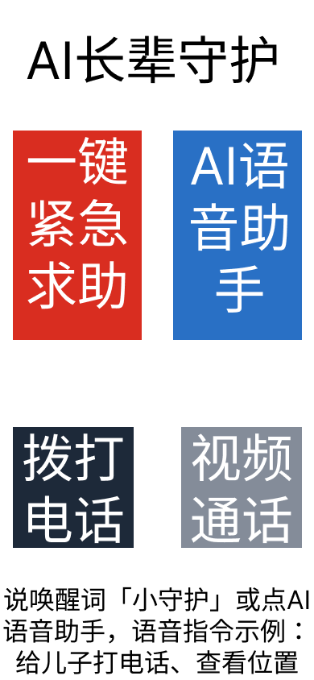
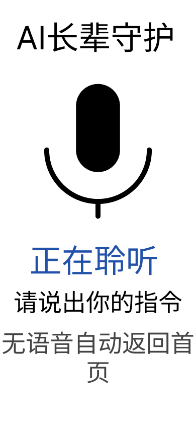
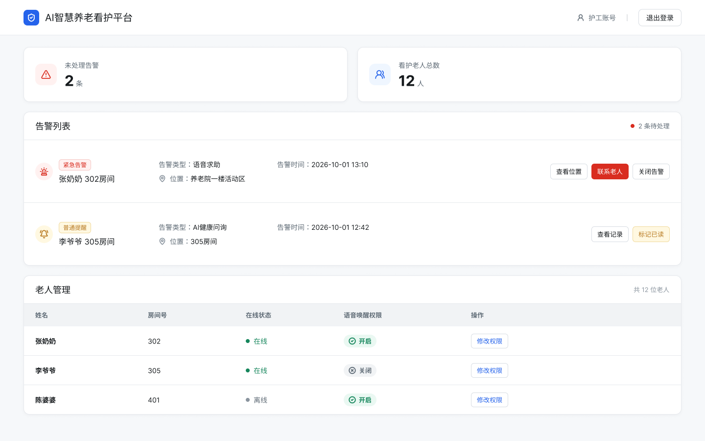

C端老人适老化APP + B端养老机构看护后台，聚焦老人求助、告警推送与护工端处理闭环。
面向养老机构的智慧看护平台，包含老人使用的 C 端极简适老化 APP，以及护工使用的 B 端管理后台。项目围绕老人求助、异常告警、护工处理与权限管理展开，重点解决老人端操作复杂、机构端告警滞后的问题。
普通 APP 字体小、广告多、操作复杂，老人看不清、容易误点广告，基础通讯和求助操作门槛高。
一名护工同时照看十几位老人，无法实时掌握老人位置和身体异常情况，告警信息滞后，处理不及时。



视力衰退、记忆力弱，部分存在口齿不便，需要大字体、低门槛操作。
负责老人日常看护、告警处理、权限配置和机构端工作台管理。
一键向护工、家属推送告警消息与老人实时位置，降低紧急情况的操作成本。
支持手动点击进入聆听页，也支持前台唤醒词触发，适合不同能力老人使用。
大字体、大按钮设计，老人可一键拨打联系人电话，减少识别和点击负担。
为老人提供清晰的家属视频通话入口，弥补文字和小按钮带来的使用障碍。
| 能力模块 | 说明 | MVP状态 |
|---|---|---|
| 老人在线统计 | 查看当前在线老人数量，辅助护工掌握看护范围 | 已可视化 |
| 告警处理 | 未处理告警置顶，区分紧急告警与普通提醒 | 已可视化 |
| 语音唤醒权限管理 | 为认知障碍老人单独关闭语音唤醒，保留手动模式 | 已可视化 |
| 位置监控与电子围栏 | 实时位置查看、越界告警，辅助机构安全管理 | 二期规划 |
| 健康记录与历史查询 | 记录老人健康问询结果，支持后续回溯与管理 | 二期规划 |
超大字体、高对比度配色、大圆角按钮，降低老人视觉识别和操作负担。
兼顾语音唤醒老人与手动点击老人，减少口齿不清、环境嘈杂带来的使用障碍。
C端采集老人告警与位置数据，B端统一管理，满足养老院真实业务闭环。